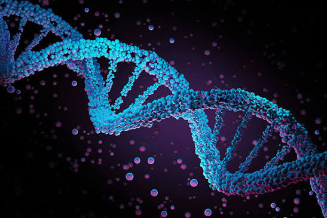

Bioinformatics is the field that combines biology, computer science, mathematics, and information technology to study biological data. Scientists use computers to organize and analyze DNA sequences, genes, proteins, and other biological information. Because modern research produces enormous amounts of genetic data, bioinformatics helps researchers discover patterns much faster than would be possible by hand. It has become an essential tool in medicine, genetics, and biotechnology.

Bioinformatics has many important applications in today's world. Doctors use it to understand genetic diseases and create personalized treatments for patients. Researchers use bioinformatics to develop vaccines, discover new medicines, and study cancer. It is also used in agriculture to improve crops, environmental science to study ecosystems, and forensic science to analyze DNA evidence.

DNA sequencing technologies can read billions of DNA letters in a short period of time. Bioinformatics software stores and analyzes this information to identify mutations, compare genomes, and study how diseases develop. Projects such as the Human Genome Project have greatly increased our understanding of human genetics through the use of bioinformatics tools.

Artificial intelligence is making bioinformatics even more powerful. Machine learning algorithms can recognize patterns in large biological datasets, predict protein structures, identify disease risks, and help scientists discover new drugs more efficiently. AI allows researchers to solve problems that would take humans much longer to complete.

The future of bioinformatics is very promising. As DNA sequencing becomes cheaper and faster, scientists will continue collecting larger amounts of biological data. Bioinformaticians will play an important role in personalized medicine, disease prevention, drug development, and scientific research. Careers in this field include computational biologist, genomics researcher, biomedical engineer, and data scientist.
| Field | Example | Purpose |
|---|---|---|
| Medicine | Cancer Research | Identify genetic mutations |
| Agriculture | Crop Improvement | Develop stronger crops |
| Pharmaceuticals | Drug Discovery | Create new medicines |
| Forensics | DNA Identification | Solve criminal investigations |
National Center for Biotechnology Information (NCBI)
National Human Genome Research Institute
© 2026 Anika Singh
Last Updated: July 27, 2026